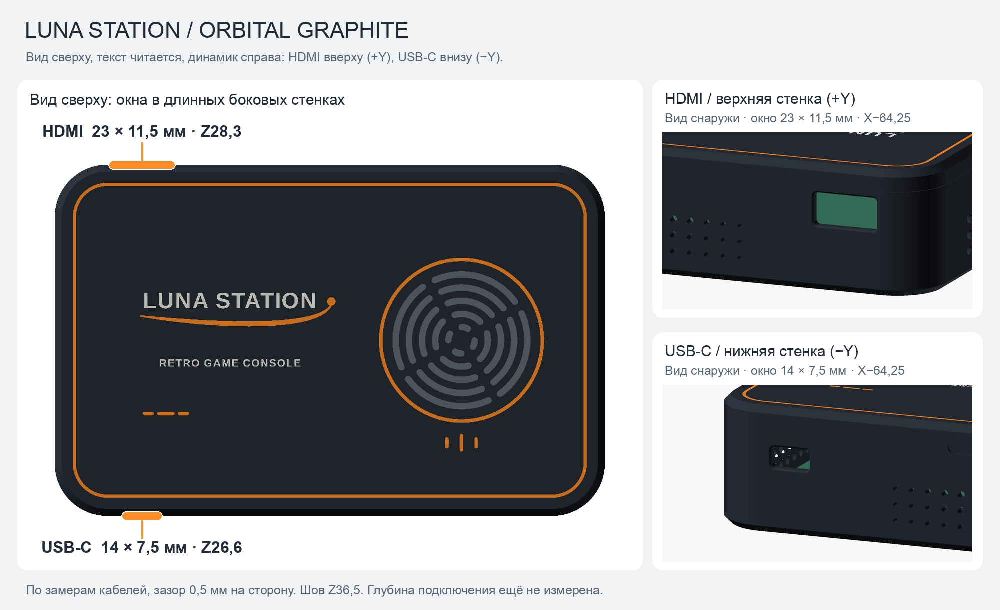
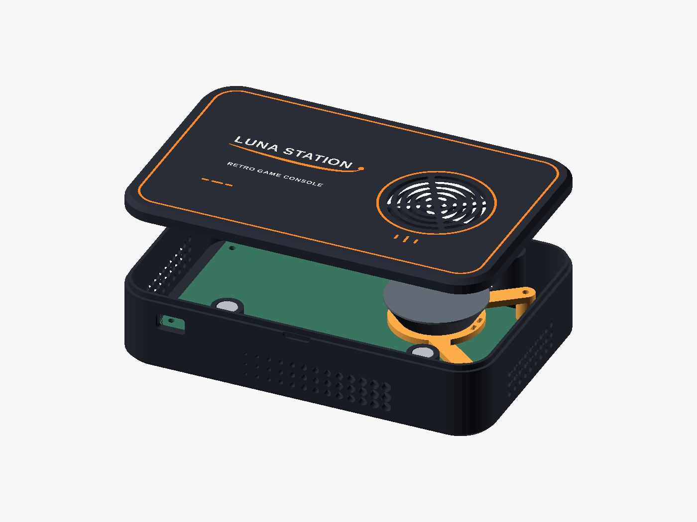
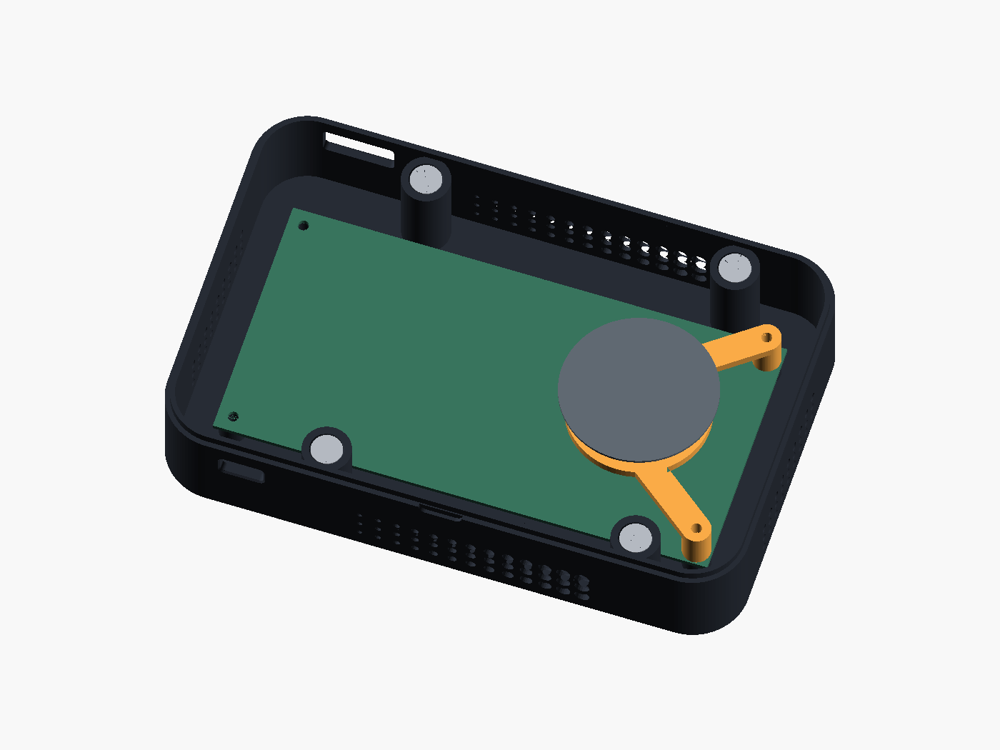
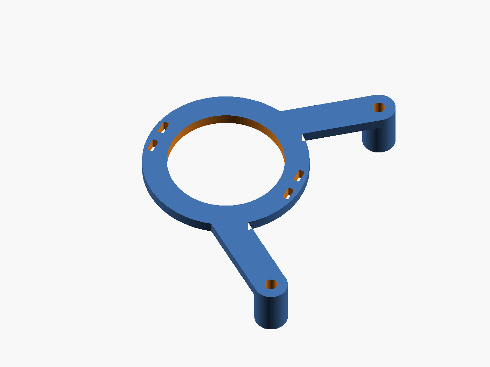
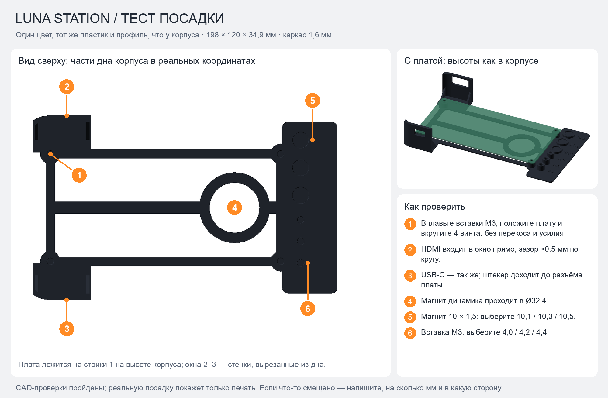
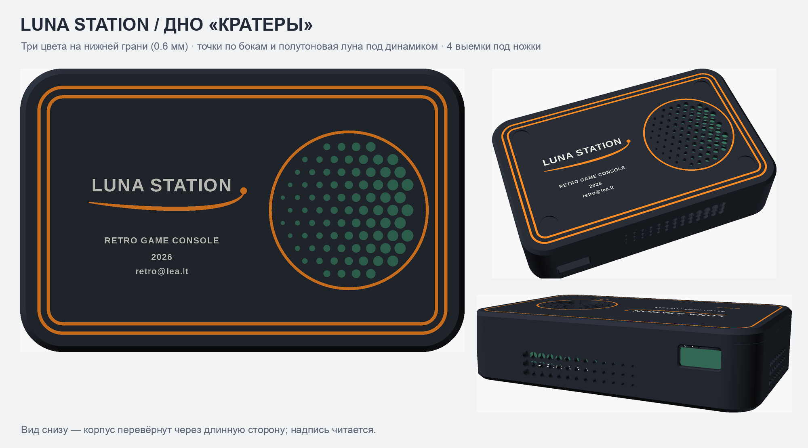

Выбран Orbital graphite — графит, тёплый белый, оранжевый. Остальные варианты сохранены для сравнения.
188 × 120 × 44 мм
Предложенный габарит
Плата 160 × 80 мм
Четыре стойки M3
4 пары Ø10 × 1,5
Магниты + бортик
R18 / три цвета
Инкрустация 0,6 мм
Выбран Orbital graphite — графит, тёплый белый, оранжевый. Остальные варианты сохранены для сравнения.
Вид сверху, текст читается, динамик справа: HDMI вверху (Y+), USB-C внизу (Y−). Если смотреть от короткого торца без динамика в сторону динамика, HDMI слева, USB-C справа. Оси обоих окон — в 15,75 мм от короткого края платы. Шов поднят до 36,5 мм: окна целиком в нижней половине, бортик непрерывный. Две магнитные пары перенесены ближе к середине, освобождая путь кабелей; общая высота осталась 44 мм.

По замерам: штекер HDMI 22 × 10,5 мм, USB-C 13 × 6,5 мм. Окна с зазором 0,5 мм на сторону: HDMI 23 × 11,5 мм, USB-C 14 × 7,5 мм. Оси на 16,7 и 15 мм над верхом основной платы — при её текущей установке это 28,3 и 26,6 мм от внешнего дна. До кромки платы от внутренней стенки 16,8 мм: возможность вставить кабели до конца ещё нужно подтвердить.



Тонкий одноцветный образец из настоящего низа корпуса: 4 стойки M3, стенки с окнами HDMI и USB-C, кольцо Ø32,4 под магнит динамика и планка подбора магнитов (Ø10,1 / 10,3 / 10,5) и вставок (Ø4,0 / 4,2 / 4,4). Всё опущено на 1,6 мм, взаимное положение платы, стоек и окон — как в корпусе. Печатать тем же пластиком и профилем, что корпус.

3MF: тест посадки · STL — 198 × 120 × 34,9 мм, одна деталь, без башни.
Точки по бокам и полутоновая «луна» под динамиком, цветные надпись и орбита на нижней грани и 4 выемки Ø13 × 1,2 мм под ножки 12,7 мм. Крышка, стойки, магниты и окна не менялись. Варианты для сравнения: base_options.png.

Параметрический OpenSCAD · Размеры и ограничения · Все расцветки
3MF: крышка · 3MF: низ и мостик — два отдельных файла, по одному на пластину P1S. Цветные части крышки и дна сгруппированы; на обеих пластинах оставлено место под башню очистки. Настройки принтера, процесса и филаментов не включены.
Используйте новые файлы вместо старых *_concept.3mf: исходная общая раскладка задевала запретную зону P1S. Не отключайте запретную зону; проверьте назначение цветов, кайму и положение башни в слайсере.
Для окончательной посадки нужны реальные координаты отверстий, высота установки платы и компонентов, глубина подключения кабелей, профиль динамика и размеры вплавляемых втулок. Весь концепт сохранён в hardware/luna-station-case/v1/.